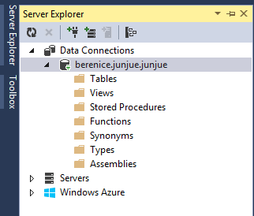

Follow Professor Rasala's lecture, use Bitvise SSH Client to build the tunnel in order to connect to school's server.
Download Bitvise SSH Client then fill the Server and Authentication parts.
Server host: login.ccs.neu.edu
Add one C2S connection from Bitvise. Fill listen interface as 127.0.0.1. Use MSSQL2005.development.ccs.neu.edu as destination host and choose port 1433.
Then go to Microsoft Visual Studio, open Server Explorer window, right-click Data Connection then choose Add Connection.
Find the password in v4.0 for SQL. Then use the same username of ccs.neu.edu and that password to log in SQL server.
Connected to the database. Finish!
